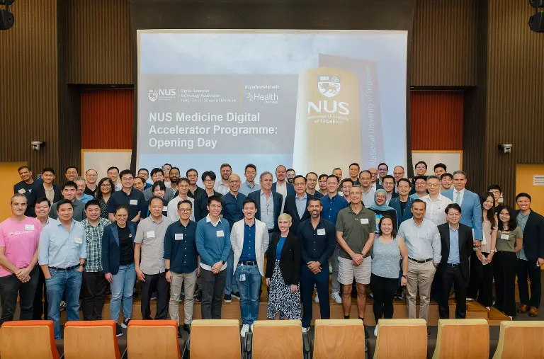
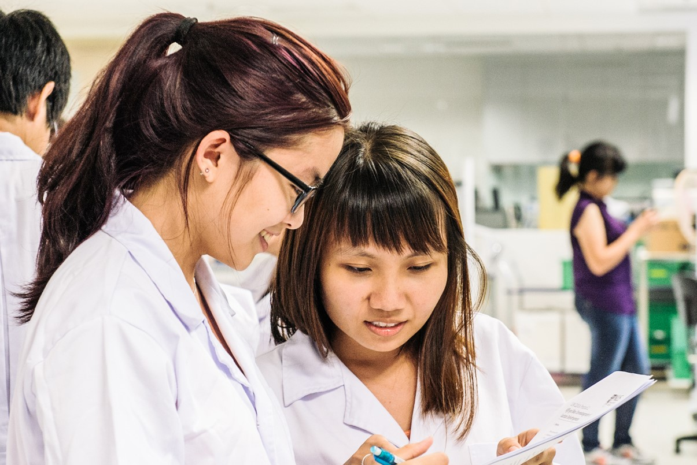

Welcome to Yong Loo Lin School of Medicine
About Us
The NUS Yong Loo Lin School of Medicine is Singapore’s first and largest medical school. Our enduring mission centres on nurturing highly competent, values-driven and inspired healthcare professionals to transform the practice of medicine and improve health around the world. Through a dynamic and future-oriented five-year curriculum that is inter-disciplinary and inter-professional in nature, our students undergo a holistic learning experience that exposes them to multiple facets of healthcare and prepares them to become visionary leaders and compassionate doctors and nurses of tomorrow. Since the School’s founding in 1905, more than 12,000 graduates have passed through our doors.
Programmes

Medicine Data Accelerator Program |
NUS International Lipidomics Program |
Genetic Therapy Research Program |

Health System Development Program |

Join us
Are you ready to embark on a transformative journey in the field of medicine? Join the National University of Singapore's Medicine Faculty, where innovation meets compassion. Here, you’ll be part of a vibrant community dedicated to advancing healthcare through cutting-edge research, hands-on clinical training, and a commitment to improving lives. Our diverse curriculum and supportive environment foster critical thinking and collaboration, preparing you to become a leader in the medical field. Together, let’s make a difference in the world of healthcare. We invite you to explore your potential and join us in shaping the future of medicine!